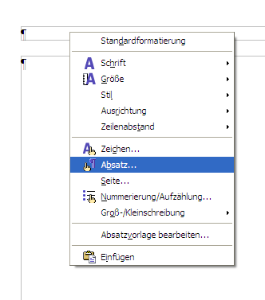
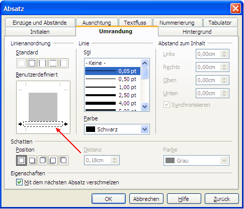
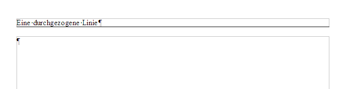
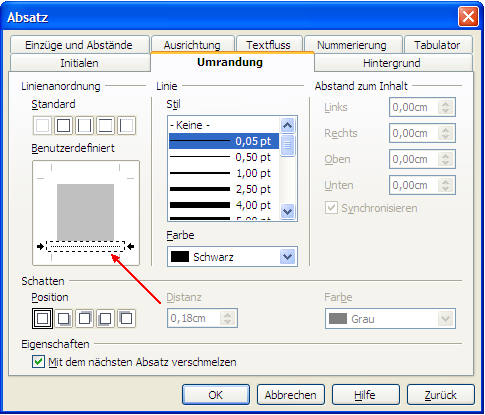
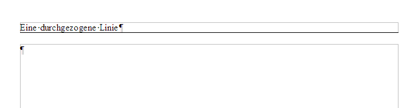

| [zurück] | [Hauptmenü] |
[weiter] |
OpenOffice.org Textdokument
-
Kopf- und Fußzeile
Kopf- und Fußzeilen sind relativ fixe Teile eines
Dokumentes, die auf vielen oder allen Seiten in der obersten
oder untersten Zeile zu sehen sind. Dabei halten sie einen
kleinen Abstand zum Text und es wird z.B. die aktuelle
Seitenzahl eingetragen.
Kopf- und Fußzeile einfügen
Kopf- und Fußzeilen werden so erstellt, dass man in das
Menü
unter Einfügen>Kopfzeile oder
Einfügen>Fußzeile geht. Dort erscheint
dann ein Submenü, wo die Seitenvorlage
zur Auswahl steht, wo die Zeile erstellt werden soll.
Bearbeitet wird die Kopf- oder Fußzeile einfach so,
dass man den Cursor hineinsetzt und tippt, was auf jeder
Seite (bezogen auf die Seitenvorlage
) stehen soll. Schon vorbereitet sind 3 Tabulatoren (links,
mittig, und rechtsbündig), um den Text ausrichten zu
können.
Will man einen variablen Text (z.B. Seitennummer)
einfügen, so muss man sich eines Feldes bedienen. Das
wird einfach dadurch erledigt, dass man in das Menü unter
Einfügen>Feldbefehl geht und sich das
entsprechende Textelement heraussucht.
Tipps
Zur besseren Abtrennung vom Haupttext kann die Kopf- oder
Fußzeile unter- bzw. oberstrichen werden. Das wird am
einfachsten über die Absatzformatierung erledigt: Setzen
Sie den Cursor in die Kopf- oder Fußzeile und klicken
Sie mit der rechten Maustaste, dann wählen Sie
Absatz.... In diesem Optionen-Dialog die
Registerkarte Umrandung wählen und schon können Sie unter dem
Absatz eine Linie einfügen:

dann:

und man erhält:

dann:

und man erhält:

Beispiele
Seitennummer einfügen: Menü - Einfügen>Feldbefehl: Seitenzahl.Analog Titel einfügen: Menü - Einfügen>Feldbefehl: Titel (funktioniert, wenn man Gliederungen verwendet).
| [zurück] | [Hauptmenü] |
[weiter] |
© Copyright 2003, Harald Schilly
This documentation is part of "Erste Schritte: OpenOffice.org Textdokument", which is released
under the terms of the PDL.
For full copyright and license info read the index page.
Contributors are: Wieland Peter